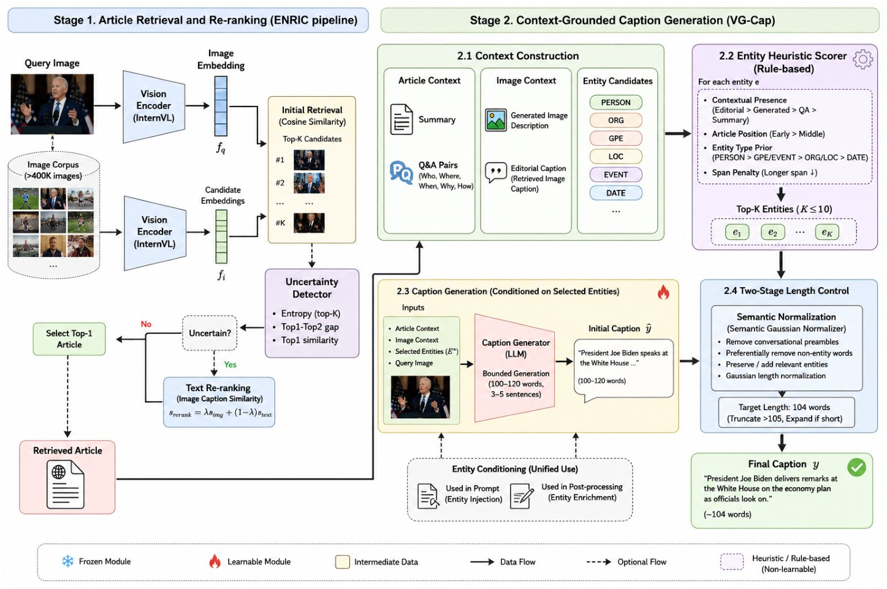
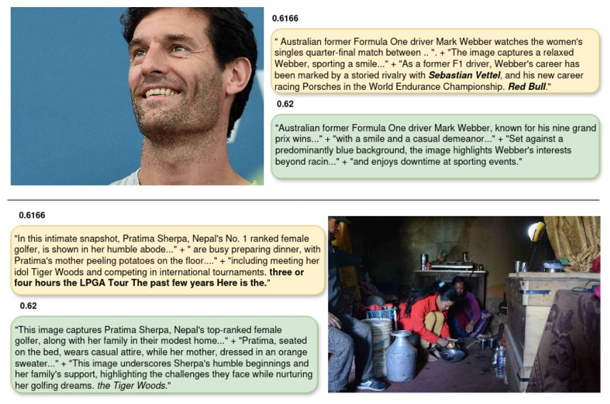

VG-Cap is a retrieval-augmented framework for event-enriched news image captioning that passes only visually grounded entities of the retrieved article to the caption generator. An Entity Heuristic Scorer selects these entities and a Two-Stage Length Control regulates the caption length. On OpenEvents-V1, VG-Cap achieves the best Overall Score of 0.6219 and the highest CIDEr of 0.265.
VG-Cap generates an event-enriched caption in two stages: article retrieval, which identifies the most relevant news article for the query image, and context-grounded caption generation. Retrieval uses the retrieval component of ENRIC as a fixed backbone, with uncertainty-guided re-ranking when the initial result is not reliable.
Two-Stage Length Control combines bounded generation, with a target range of 100-120 words, and semantic normalization to a target length of 104 words.

Figure 1. Overview of VG-Cap. A query image is used to retrieve a relevant news article, from which contextual information and candidate entities are extracted. The Entity Heuristic Scorer selects visually grounded entities to guide caption generation, followed by Two-Stage Length Control for the final event-enriched caption.
The Entity Heuristic Scorer gives every candidate entity a groundedness score: the weighted sum of its heuristic features (contextual presence, article position and entity type), which cannot fall below zero.
Equation (1): the groundedness score S(e) of a candidate entity e.
Entities with a score of at least 3.0 are retained and ranked according to their scores, and at most ten entities are selected.
Equation (3): the selected entity set.
Table 1. Comparison with existing methods on the OpenEvents-V1 dataset. ∗Overall Scores computed from the official evaluation formula when not reported. Best in bold, second best underlined.
| Method | Overall↑ | AP↑ | R@1↑ | R@10↑ | CLIP↑ | CIDEr↑ |
|---|---|---|---|---|---|---|
| ENRIC [9] | 0.6097 | 0.992 | 0.985 | 1.000 | 0.833 | 0.257 |
| ReCap [10] | 0.5987 | 0.995 | 0.992 | 0.999 | 0.872 | 0.243 |
| Beyond Vision [11] | 0.5182 | 0.994 | 0.990 | 1.000 | 0.748 | 0.195 |
| ZSE-Cap [3] | 0.4585∗ | 0.994 | 0.990 | 0.999 | 0.842 | 0.151 |
| HMR [8] | 0.4033∗ | 0.970 | 0.956 | 0.991 | 0.883 | 0.123 |
| CIAN [14] | 0.3320 | 0.979 | 0.969 | 0.996 | 0.820 | 0.094 |
| VG-Cap (ours) | 0.6219 | 0.992 | 0.985 | 1.000 | 0.858 | 0.265 |
VG-Cap achieves the best Overall Score of 0.6219 and the highest CIDEr of 0.265, compared with 0.6097 and 0.257 for ENRIC, the strongest baseline. Its retrieval metrics are identical to those of ENRIC because the retrieval pipeline is unchanged. ReCap obtains the highest AP (0.995) and R@1 (0.992), and HMR the highest CLIPScore (0.883), but their lower CIDEr limits their Overall Score.
Table 2. Ablation study on the OpenEvents-V1 dataset. Retrieval and the caption backbone are fixed across all configurations. "Length" denotes mean caption length in words. Best in bold, second best underlined.
| Configuration | Overall↑ | CIDEr↑ | CLIP↑ | Length |
|---|---|---|---|---|
| ENRIC baseline (reproduced) | 0.6097 | 0.257 | 0.833 | 136 |
| + semantic normalizer | 0.6124 | 0.260 | 0.835 | 104 |
| + entities, prompt band | 0.6166 | 0.263 | 0.833 | 104 |
| + heuristic selector (ours) | 0.6219 | 0.265 | 0.858 | 104 |
Starting from the reproduced ENRIC baseline, the semantic normalizer raises the Overall Score from 0.6097 to 0.6124 while reducing the mean caption length from 136 to 104 words. The heuristic selector then reaches an Overall Score of 0.6219, a CIDEr of 0.265 and a CLIPScore of 0.858 at the same mean caption length.
Captions generated with unfiltered and with groundedness-filtered entities for two examples. Without filtering, entities that are relevant to the article but weakly supported by the image are appended as contextual filler; filtering shifts the caption toward image-supported content.

Figure 4. Qualitative comparison of captions generated with unfiltered and groundedness-filtered entities. Discarded entities are highlighted.
@misc{phangrounding,
author = {Phan, Van-Phuc and Pham, Minh-Tan and Tran, Mai-Khiem and Do, Trong-Le and Nguyen, Hai-Dang and Nguyen, Tam V. and Tran, Minh-Triet and Le, Trung-Nghia},
title = {Grounding What Matters: Selective Entity Conditioning for Event-Enriched News Image Captioning},
}